Resolver necesidades reales.
Brindar servicios de construcción, mantenimiento y montaje con soluciones prácticas, atención cercana y compromiso con cada proyecto.
Soluciones técnicas para obras civiles, mantenimiento industrial y proyectos agroindustriales en Santa Cruz y toda Bolivia.
Somos una empresa de servicios generales orientada a resolver necesidades de construcción, mantenimiento y montaje para clientes particulares, industriales y agroindustriales.
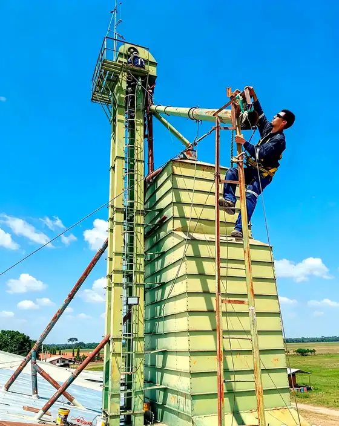
SERVICIOS EN CAMPOAcompañamos cada requerimiento con atención directa, criterio técnico y enfoque en la continuidad de las operaciones. Trabajamos en obras civiles, instalaciones industriales, estructuras metálicas y pintura en general.
Brindar servicios de construcción, mantenimiento y montaje con soluciones prácticas, atención cercana y compromiso con cada proyecto.
Consolidarnos como una empresa reconocida por la calidad de sus trabajos y su aporte al desarrollo industrial y agroindustrial.
Responsabilidad, seguridad, honestidad, mejora continua y respeto por el cliente y su operación.
Nacimos en San Ignacio de Velasco como una empresa de servicios gráficos: diseño y producción de piezas visuales para negocios, ferias y eventos de la región.
En 2026, los proyectos de diseño de stands para FEXPOSIV nos pusieron frente a un nuevo reto: llevar las ideas del plano a la construcción. Esa experiencia nos impulsó hacia la metalurgia, la construcción, los proyectos y la ingeniería.
Hoy sumamos el mantenimiento para el sector agrícola, con la misma atención al detalle y la misma disciplina de diseño con la que empezamos.
Comenzamos con diseño y producción gráfica para clientes locales.
El diseño de stands para FEXPOSIV 2026 abre la puerta a la estructura, la construcción y el trabajo con metal.
Ejecutamos proyectos y damos servicios de mantenimiento al sector agrícola e industrial.
Diseño y producción gráfica. Es nuestro origen y sigue siendo parte de nuestra forma de trabajar.
Diseño de stands para ferias y exposiciones, como los proyectos de FEXPOSIV 2026.
Estructuras metálicas, soldadura, galpones, montaje industrial y pintura.
Obras civiles y proyectos con criterio técnico, desde la planificación hasta la ejecución.
Silos, elevadores, secadoras y equipamiento para el sector agrícola y agroindustrial.
Capacidad técnica para acompañar cada etapa de tu proyecto.
Construcción y ejecución de infraestructura civil para proyectos particulares e industriales.
Mantenimiento y reparaciones especializadas para instalaciones y equipos industriales y agroindustriales.
Fabricación, montaje y adecuación de estructuras metálicas e infraestructura industrial.
Trabajos ejecutados, ordenados según el servicio.
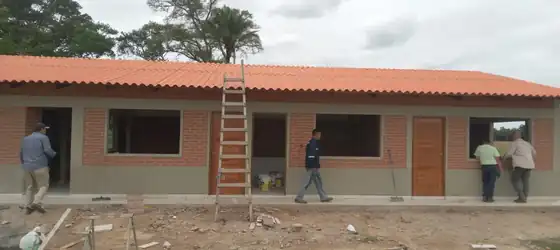
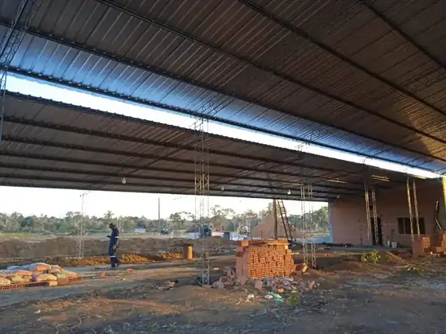
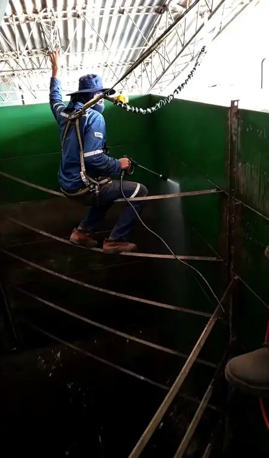
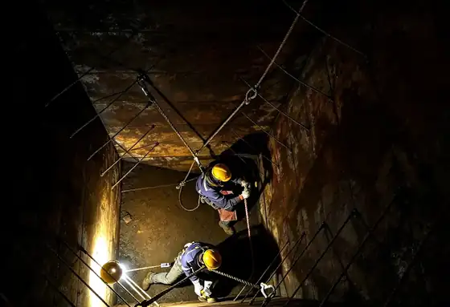
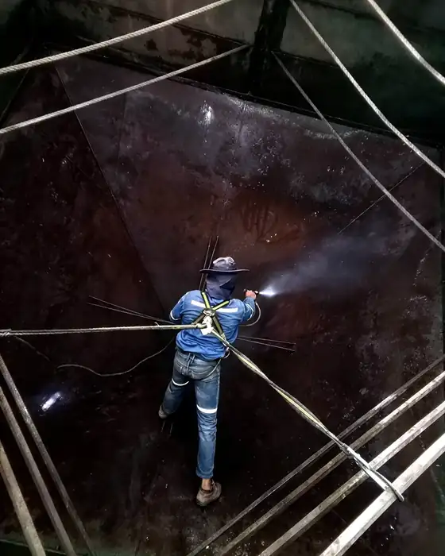
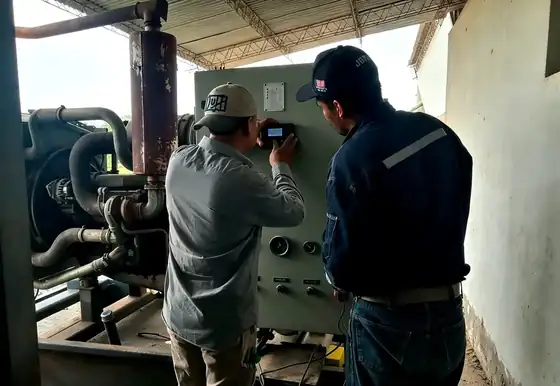
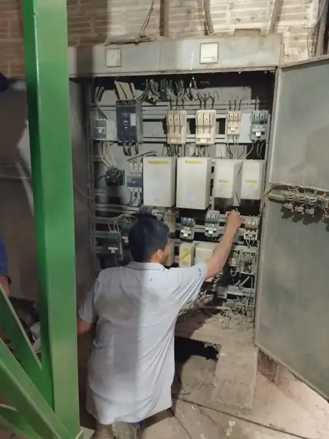
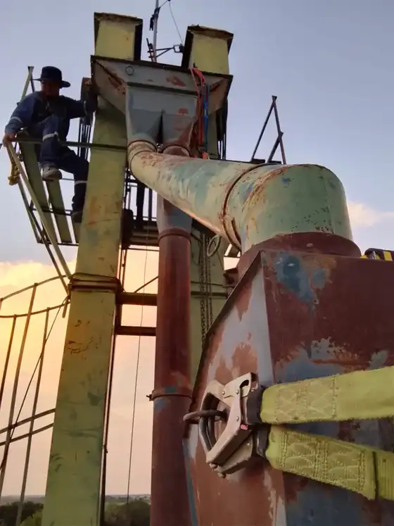
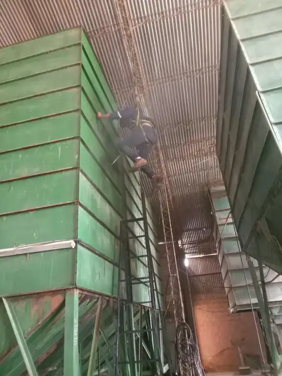
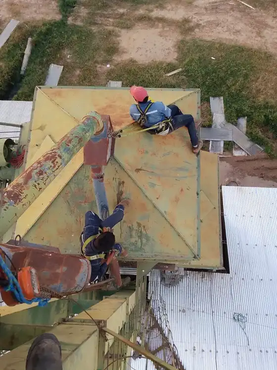
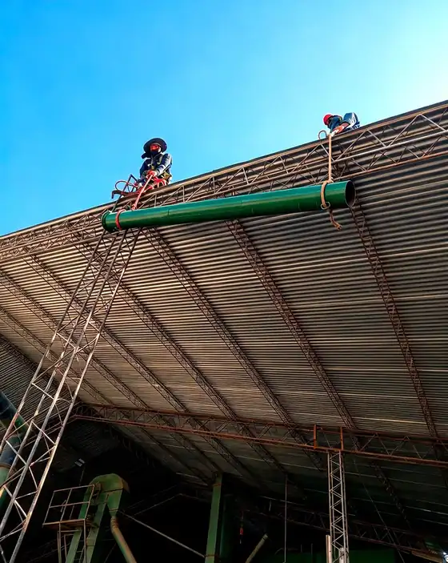

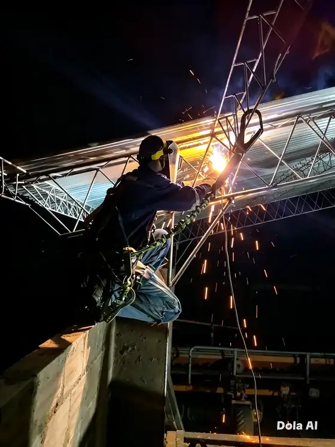
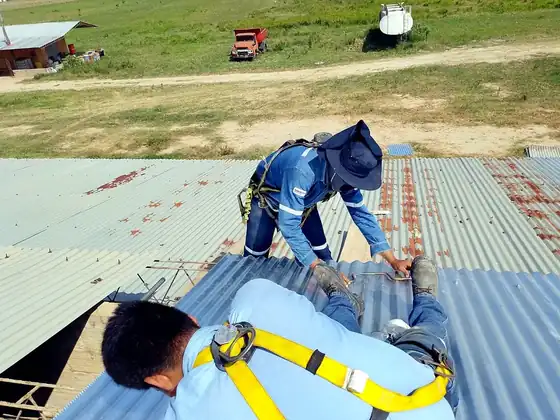

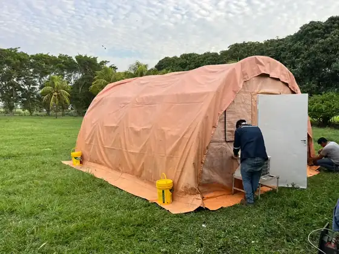


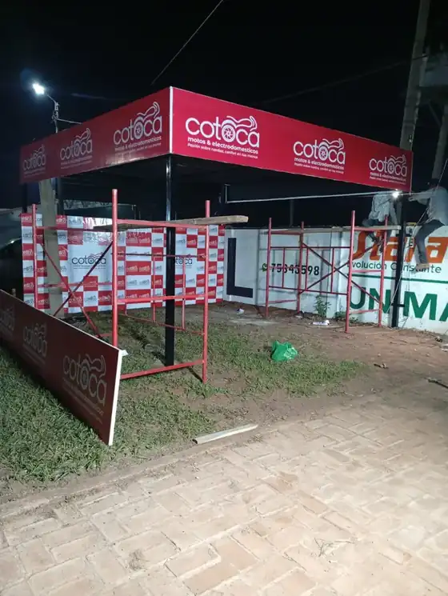
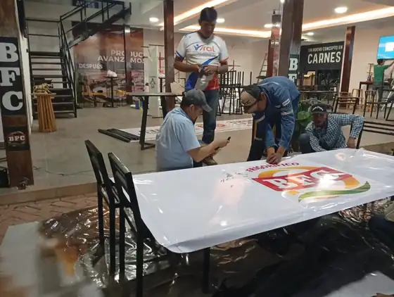
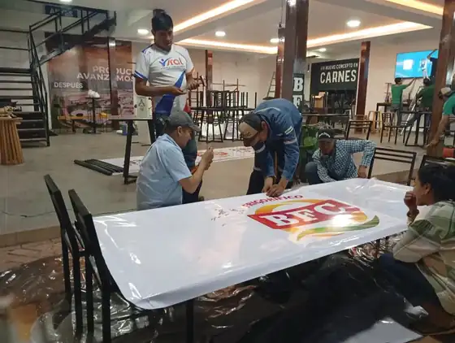
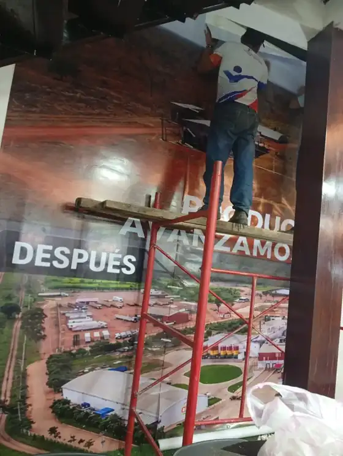
Algunos de los clientes que han trabajado con nosotros en proyectos, servicios y eventos.
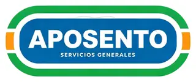
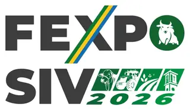
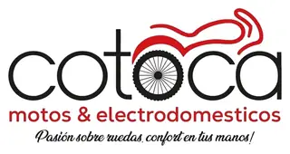
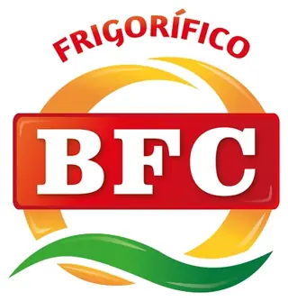
Un proceso claro para organizar cada servicio y mantener al cliente informado durante la ejecución.
Conocemos la necesidad, el equipo, la obra y las condiciones del sitio.
Revisamos el alcance técnico y coordinamos los recursos necesarios.
Realizamos el trabajo con atención a la seguridad y calidad de ejecución.
Comunicamos el avance y coordinamos la entrega del servicio realizado.
Cuéntanos qué necesitas. Nuestro equipo puede orientarte y preparar una cotización.
✉ romecserviciosgenerales@gmail.com
⌖ Final Cumavi, noveno anillo
Santa Cruz de la Sierra, Bolivia